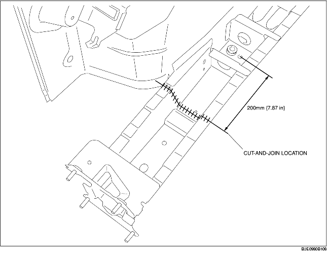

1. Cut the new and existing parts at the cut-and-join location, and bevel the parts.
2. To cut-and-join the new part, cut at the locations indicated in the figure below and bevel the cut-and-join locations of the new parts.
3. When installing the new parts, trial-fit new and existing parts, and then measure and adjust the body to conform with standard dimensions.
4. After temporarily installing new parts, make sure the related parts fit properly.
